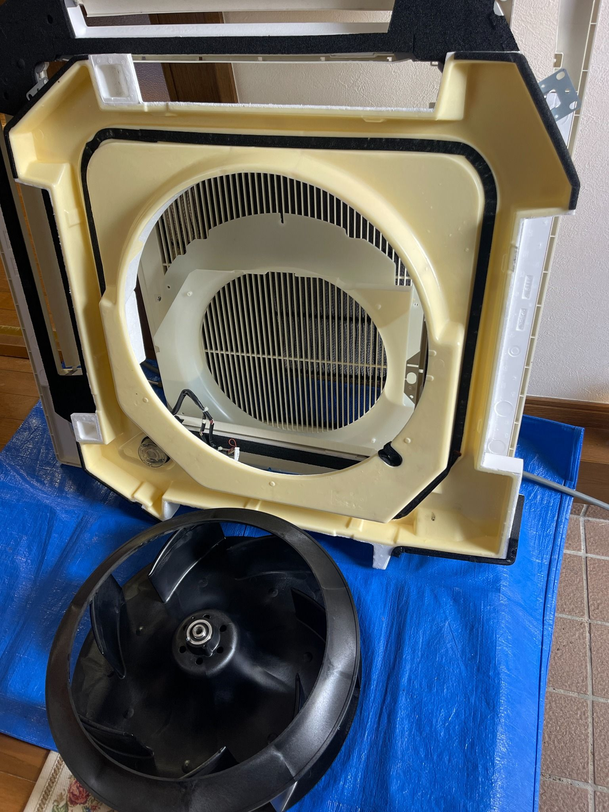
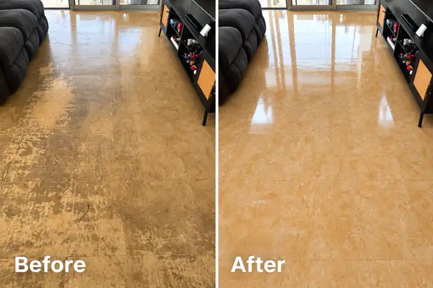
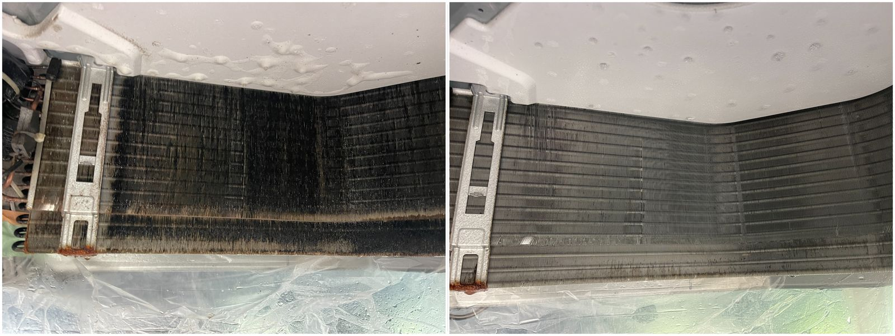
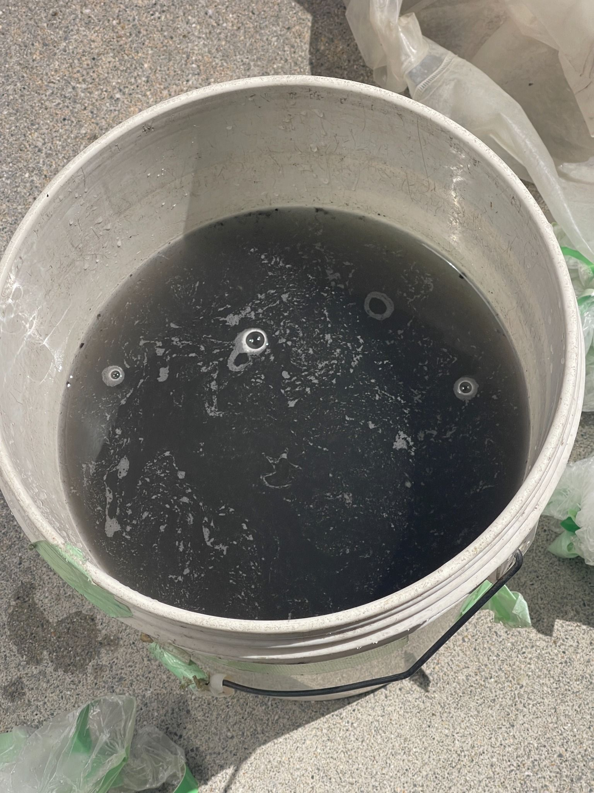

エアコンのにおい・汚れが気になる
天カセ・天吊からにおいがする、汚れが目立つ。店舗環境を整えたい。

沖縄の店舗・事務所・施設向け｜天カセ・天吊エアコン洗浄
天カセ・天吊の分解洗浄から、床洗浄・ワックスまで一括相談。
複数業者への見積依頼や日程調整をまとめ、清掃費用と管理の手間を見直しませんか？
写真・台数・床面積など、分かる範囲でご相談ください
快適な営業環境を保ちたい。でも、複数業者への依頼や日程調整には時間がかかります。
天カセ・天吊からにおいがする、汚れが目立つ。店舗環境を整えたい。
床洗浄・ワックスを頼みたいけれど、エアコンとは別の手配になっている。
複数台・複数箇所の清掃をまとめて相談できる窓口を探している。
清掃業17年の現場経験をもとに、機種・床材・施工条件を確認して現場に合う内容をご案内します。

天井カセット型（天カセ）・天井吊下型（天吊）を中心に、店舗・事務所の業務用エアコン清掃をご相談いただけます。汚れ・においのほか、ドレン詰まりや水漏れなども症状を確認してご案内します。機種や設置状況により分解範囲・対応可否が異なります。

店舗・事務所・施設の床洗浄、ワックス施工もエアコン清掃とまとめてご相談ください。床材・面積・汚れの状態を確認し、現場に合った内容をご案内します。
竣工清掃・改修後清掃・ガラス清掃など、その他の現場清掃もご相談いただけます。
エアコンと床の清掃を別々に依頼する手間を減らし、まとめて相談できます。
営業時間や定休日に配慮し、現場に合った施工順序・日程を調整します。
機種・台数・床面積・清掃範囲を確認し、まとめて見積りをご案内します。
※一括依頼による値引きや費用削減を保証するものではありません。現場条件を確認してご案内します。
店舗・施設など、現場ごとの養生や清掃範囲を確認し作業内容をご案内します。
清掃だけでなく、水漏れ・エラーなど空調の不具合もご相談いただけます。
修理・入替・専門工事は内容と法令要件を確認し、メーカー・協力会社と連携します。
BCサービスが相談窓口となり、現場内容を整理します。 自社で担当する清掃業務と、協力会社・メーカー等との連携が必要な施工を事前に確認し、作業範囲・費用をご案内します。


沖縄本島内対応
案件内容・規模に応じてご相談ください
業務用エアコン清掃や竣工清掃は、
台数・広さ・作業内容によって変わるため
現場状況を確認のうえお見積りいたします。
まずはLINEで写真や内容をお送りください。
BCサービスのInstagramでは、実際の作業の様子や清掃前後の状態を紹介しています。店舗・事務所・施設のエアコン清掃や床清掃を検討している方は、現場の雰囲気や作業の流れを確認する参考にしてください。
※Instagramの投稿が表示されない場合は、Instagramアプリまたはブラウザでご確認ください。
店舗や事務所の業務用エアコンでは、汚れによるにおいや風量低下だけでなく、ドレンまわりの詰まりや水漏れ、フロートスイッチの不具合によるエラー停止の相談もあります。BCサービスでは、現場写真やエラー状況を確認しながら、清掃で対応できる範囲か、部品交換や別対応が必要かを整理してご案内します。
業務用エアコンでは、排水経路に汚れがたまることでドレンホースが詰まり、ドレンパンに水がたまって水漏れやエラー停止につながることがあります。水が垂れる、エラーが出て止まる、ドレンパンに水が残るといった症状がある場合は、清掃とあわせて排水まわりの状態確認をご相談ください。
ドレンパン内の水位を検知するフロートスイッチが正常に動かない場合、ドレンパンが満水になったり、エアコンがエラーで停止することがあります。症状や機種によって対応方法は変わりますが、フロートスイッチの交換相談にも対応可能です。写真や型番、エラー内容を送っていただけると確認しやすくなります。
店舗や事務所では、エアコン清掃と床清掃を別々の業者に依頼していて、日程調整や発注管理が大変になることがあります。BCサービスでは、業務用エアコン清掃と床清掃をまとめて相談できるため、複数業者とのやり取りを減らし、現場ごとの段取りを整理しやすくなります。
業務用エアコンは、台数・設置場所・営業時間によって作業の進め方が変わります。営業前後の作業、複数台の順番、養生範囲、床や什器まわりの保護など、現場に合わせた段取りをご相談いただけます。
エラー表示・水漏れ・清掃範囲が分からない場合も、まずは写真や型番をLINEで送ってご相談ください。
LINEで業務用エアコン清掃を相談する業務用エアコン清掃や店舗・事務所清掃は、機種・台数・設置状況・作業範囲によって作業内容や料金が変わります。LINEで事前に写真や情報を送っていただけると、現場確認や見積りの目安をスムーズにお伝えしやすくなります。
天井埋込型・天井吊下型・壁掛け型など、エアコンの形状が分かる写真を送ってください。脚立や養生が必要か、周囲に什器や棚があるかも確認しやすくなります。
本体の型番シールやリモコン、エラー表示が分かる写真があると、対応可否や部品確認、フロートスイッチなどの相談時にも確認しやすくなります。
清掃したい台数、設置されている場所、天井高、作業スペースの有無を教えてください。複数台の場合は、作業順序や所要時間の目安を整理しやすくなります。
水漏れ、ドレン詰まり、エラー停止、風のにおい、吹き出し口の汚れなど、気になる症状があれば事前に教えてください。清掃で確認できる範囲か、部品交換や別対応が必要かを整理しやすくなります。
エアコン清掃とあわせて床清掃も相談したい場合は、床材・広さ・汚れの状態が分かる写真を送ってください。別々の業者に頼む手間を減らしたい場合も、まとめて相談できます。
営業前・営業後・定休日など、作業しやすい時間帯があれば教えてください。店舗営業や来客予定に合わせて、できるだけ無理のない段取りを確認します。
写真がすべて揃っていなくても大丈夫です。分かる範囲で送っていただければ、確認に必要な情報をこちらからご案内します。
LINEで写真を送って見積り相談する業務用エアコン清掃や店舗・事務所清掃は、家庭用エアコンと違い、機種・台数・設置場所・作業時間・床清掃の有無によって作業内容が大きく変わります。そのため、BCサービスでは現場写真や台数、型番、気になる症状を確認したうえで、作業内容と料金目安をご案内しています。
天井埋込型、天井吊下型、壁掛け型など、業務用エアコンは形状によって分解範囲や養生方法が変わります。型番や本体写真があると、作業内容の確認がしやすくなります。
複数台まとめて清掃する場合や、天井が高い場所、什器や棚が近い場所では、作業順序や養生範囲の確認が必要です。台数と設置場所が分かると、段取りや所要時間の目安を出しやすくなります。
ドレンホースの詰まり、水漏れ、エラー停止、フロートスイッチの不具合が疑われる場合は、清掃だけでなく排水まわりや部品確認が必要になることがあります。症状やエラー内容を事前に共有いただけると確認しやすくなります。
エアコン清掃と床清掃をまとめて相談する場合は、床材・広さ・汚れの状態によって作業内容が変わります。別々の業者に依頼する手間を減らしたい場合も、写真を送ってまとめてご相談いただけます。
正確な料金は現場状況や作業範囲によって変わるため、写真・台数・型番・症状を確認したうえで目安をご案内します。内容が分からない場合も、まずは分かる範囲でLINEからご相談ください。
概算を知りたい場合は、エアコン本体・型番・設置場所・台数が分かる写真をLINEで送ってください。床清掃も一緒に相談したい場合は、床の写真や広さも分かる範囲でお知らせください。
LINEで料金目安を相談する店舗・事務所・施設の業務用エアコン清掃や床清掃について、よくあるご相談をまとめました。現場の状況によって作業内容や料金は変わるため、写真・台数・型番・エラー内容などをLINEで送っていただけると確認しやすくなります。
はい、店舗や事務所の営業時間に合わせて相談できます。営業前・営業後・定休日など、現場の状況に応じて作業しやすい時間帯を確認します。台数や設置場所によって作業時間が変わるため、事前に写真や台数を送っていただけると段取りを組みやすくなります。
天井埋込型・天井吊下型・壁掛け型など、業務用エアコンの清掃相談に対応しています。機種や設置状況によって作業内容が変わるため、型番・設置写真・台数を確認したうえで、対応可否や料金目安をご案内します。
はい、ドレンホースの詰まりや水漏れの相談も可能です。業務用エアコンでは、排水経路に汚れがたまることでドレンパンに水が残り、水漏れやエラー停止につながる場合があります。症状によって対応範囲が変わるため、写真やエラー内容を確認してご案内します。
フロートスイッチの不具合や交換相談にも対応可能です。ドレンパン内の水位を検知する部品のため、不具合があるとエラー停止や水漏れにつながることがあります。ただし、機種や部品状況によって対応方法が変わるため、型番や症状を確認してからのご案内になります。
はい、エアコン清掃と床清掃をまとめてご相談いただけます。別々の業者へ依頼すると日程調整や発注管理が大変になりやすいため、同じ現場でまとめて相談したい場合は、清掃範囲・床材・エアコン台数を確認して段取りをご案内します。
複数台の見積り相談も可能です。店舗・事務所・施設では、設置場所や台数によって作業順序、養生範囲、作業時間が変わります。台数・機種・設置場所が分かる写真を送っていただけると、確認がスムーズです。
写真だけでも概算相談は可能です。正確な金額は現場状況や機種確認後になりますが、エアコンの型番、設置状況、汚れ具合、台数、床清掃の有無などが分かる写真を送っていただけると、作業内容や料金目安を事前に整理しやすくなります。
型番・台数、床の写真や広さ、希望時期などを分かる範囲でお知らせください。
必要に応じて現地確認し、作業内容や施工体制を整理します。
作業内容と費用を事前にご案内し、ご納得いただいてから日程を調整します。
写真・台数・床面積など分かる範囲で大丈夫です。
店舗・事務所の清掃の手配を、BCサービスがお手伝いします。
電話のご相談：050-1724-1338